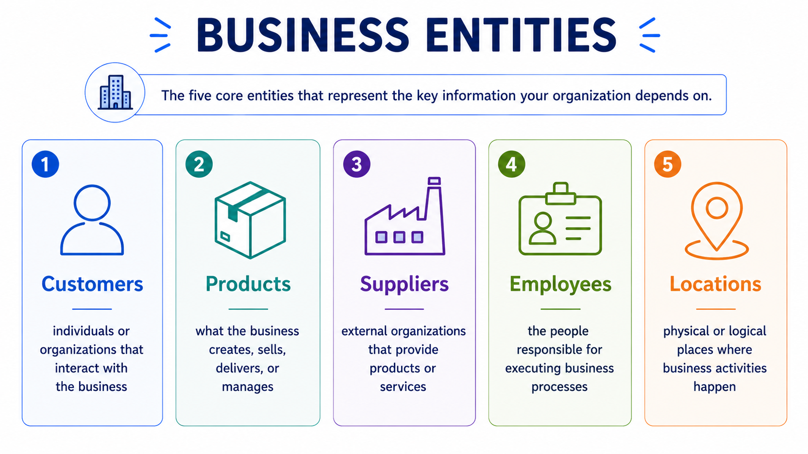
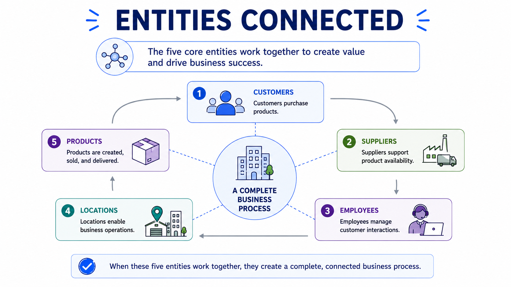

Customers, Products, Suppliers, Employees, Locations
Module support notes
Master data domains are built from business entities — the people, products, locations, and organizations that businesses depend on every day. These entities are not isolated records. They are reused across teams, processes, and systems. Understanding them helps organizations define ownership, improve consistency, and build the trusted business information that AI and analytics depend on.

Customers and products
Customer data is one of the most widely shared forms of master data — used across sales, support, billing, operations, and analytics. A trusted customer record reduces duplicate interactions and improves decision-making across the organization.
Product data defines what the business creates, sells, delivers, or manages. It is reused across inventory, procurement, finance, customer channels, and analytics. Without consistent product information, reporting becomes unreliable and operations slow down.
Suppliers, employees, and locations
Supplier data represents external organizations that provide products or services to the business. Employee data represents the people responsible for executing business processes. Together, these domains support procurement, governance, approvals, compliance, and operational execution.
Location data represents the physical or logical places where business activities happen — offices, warehouses, stores, distribution centers, and service regions. Consistent location information supports logistics, compliance, planning, and performance measurement across regions.
How business entities connect
These entities rarely operate independently. Customers purchase products. Suppliers support product availability. Employees manage customer interactions. Locations enable business operations. Together, they form a complete business process — and when any one of them is inconsistent or poorly managed, the others are affected.

Why this matters for AI
AI systems learn from the relationships between business entities. When customer, product, supplier, employee, and location data are clean and consistently connected, AI models receive richer and more reliable context — leading to better predictions, smarter recommendations, and more dependable automation.